1. 로그인과 서비스 버전
관리자가 안내한 내부 moyro 주소를 엽니다. 이메일 또는 사용자명과 비밀번호로 로그인합니다. 관리자가 Keycloak OIDC를 활성화했다면 로그인 화면에 SSO 진입점도 표시됩니다.
로컬 회원가입이 닫힌 조직에서는 관리자가 발급한 초대 링크를 여세요. 일반 사용자 링크는 워크스페이스에 가입시키고, 게스트 링크는 안내된 채널·접근 만료·파일 다운로드 정책만 허용합니다. 만료·폐기·사용 횟수 소진 링크는 가입에 사용할 수 없습니다.

로그인 뒤에는 오른쪽 위의 계정 메뉴 열기 버튼을 선택합니다. 프로필 컨텍스트 메뉴에서도 동일한 버전을 확인할 수 있습니다. 오류를 문의할 때 버전과 발생 시각을 함께 전달하세요.
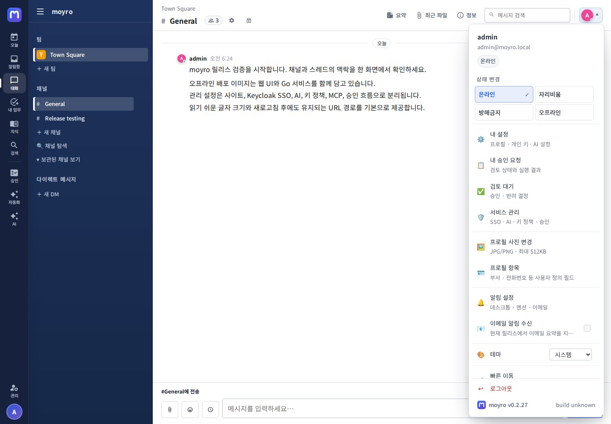
2. 글로벌 레일, 오늘과 통합 알림함
로그인하면 오늘이 업무 시작점으로 열립니다. 데스크톱 글로벌 레일은 오늘, 알림함, 대화, 내 업무, 검색, 승인과 권한이 있을 때 AI를 연결합니다. 오늘 화면은 서버에 저장된 채널별 unread·mention counter와 저장 메시지, 예약 메시지, 리마인더, 승인 요청을 집계하며 일부 API가 실패하면 해당 영역을 0으로 성공 처리하지 않고 경고합니다.
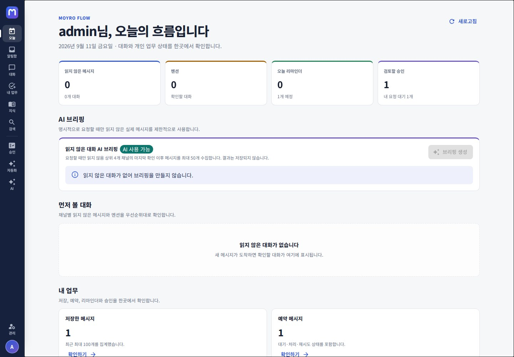
통합 알림함의 업데이트 탭은 나에게 온 멘션, DM, 참여 스레드 답글, 승인 요청·결과, 리마인더, 작업 할당과 지원되는 플러그인 알림을 PostgreSQL에 보존합니다. 각 항목을 읽음·읽지 않음, 내가 정한 preset까지 미루기, 완료로 바꿀 수 있습니다. VIP·이벤트 우선순위, 채널/종류별 묶음, 시간대·요일·시각 기반 근무시간과 우선 알림 예외도 개인 설정에서 저장합니다.
대화 탭은 별도의 채널별 unread·mention counter입니다. 여기의 채널 전체 읽음은 durable 업데이트 하나가 아니라 그 채널의 현재 메시지 전체에 적용됩니다. 원본 채널 멤버십을 잃으면 해당 채널의 durable activity도 이후 목록과 상태 변경에서 보이지 않습니다.
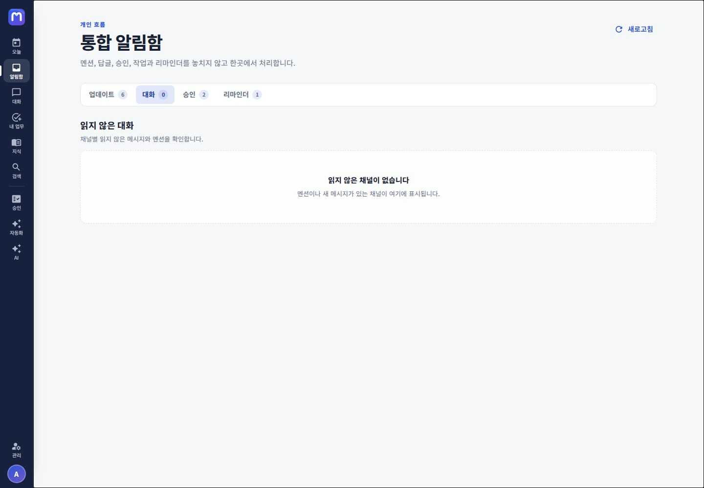
승인과 리마인더 탭은 각각 실제 승인 요청 및 메시지 리마인더 API를 사용합니다. 승인 검토 목록은 클라이언트가 전역 권한을 추정하지 않고 서버가 team·resource scope로 허용한 항목만 표시합니다.
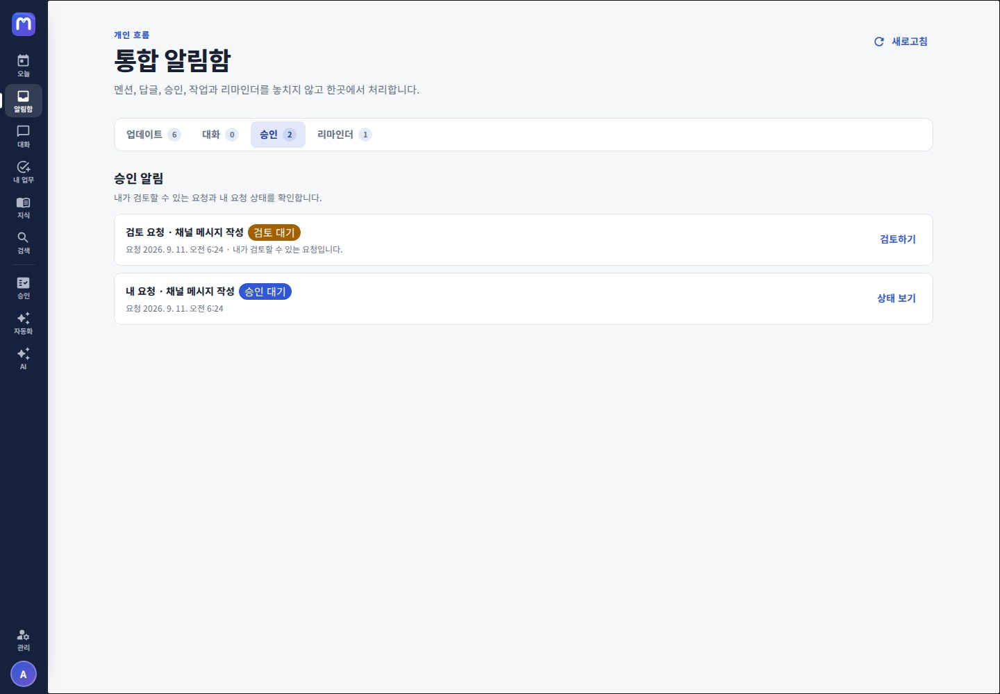
3. 팀, 채널과 통합 컨텍스트
대화에서 팀과 채널을 선택하면 URL이 해당 위치로 바뀌며 새로고침해도 같은 채널이 복원됩니다. 공개·비공개 채널과 DM·그룹 메시지에서 게시, 답글, 파일, 반응, 수정, 삭제와 저장을 사용합니다.
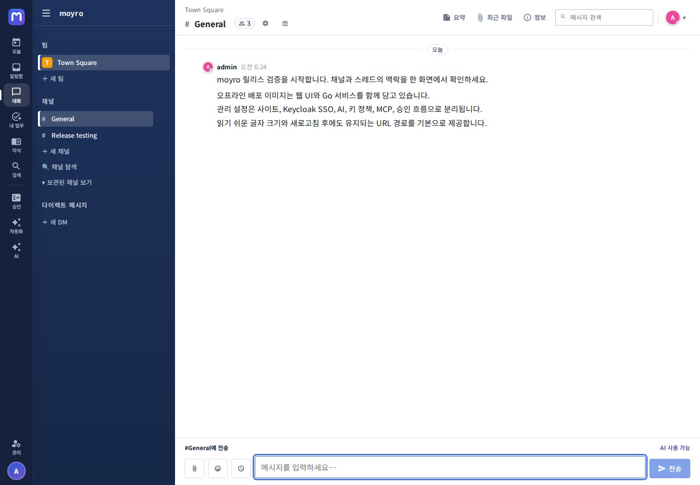
오른쪽 컨텍스트 패널은 스레드·요약·파일·정보 탭을 제공합니다. 요약은 사용자가 버튼을 누를 때 현재 브라우저에 로드된 최근 메시지만 실제 SSE AI에 전송하고 입력으로 제공한 메시지 목록을 함께 보여줍니다. 이는 조직 전체 RAG 검색이나 모든 문장의 citation 보장이 아닙니다. 파일 탭도 현재 로드된 메시지의 첨부만 집계합니다.
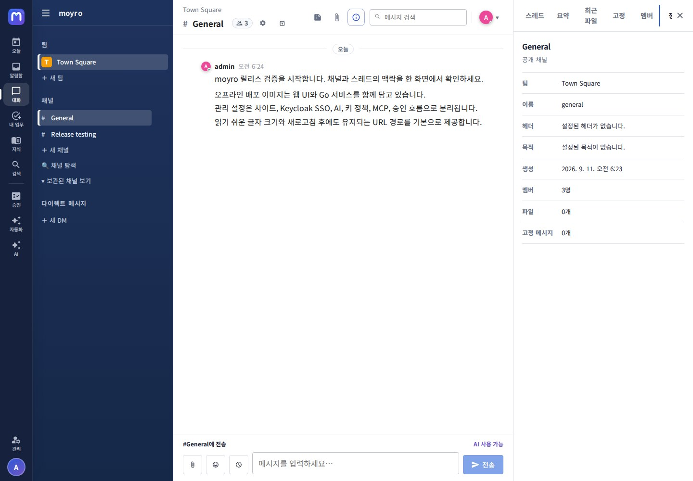
4. 작업·결정과 개인 항목을 모은 내 업무
내 업무는 내 작업, 내 결정, 저장한 메시지, 예약 메시지와 리마인더 탭을 제공합니다. 작업은 목록·보드·월 달력·날짜순 타임라인으로 전환하고 우선순위, 일/주/월 반복과 선행 작업을 설정할 수 있습니다. 끝나지 않은 선행 작업이 있으면 시작·완료를 서버가 차단하며 반복 작업 완료 시 다음 회차 한 건을 만듭니다.
결정은 제안, 검토 중, 기록, 대체와 취소 단계 및 선택 검토자를 사용하고 영향받는 작업과 연결합니다. 변경 이력은 원본 채널의 현재 멤버에게만 보입니다. 자동화 화면에서는 한 채널의 메시지가 특정 문자열을 포함하거나 시작할 때 작업·결정·리마인더를 만드는 규칙을 최대 다섯 action으로 구성합니다. 실행은 lease·재시도·멱등 키를 사용해 재시작과 중복 delivery에도 같은 action을 두 번 만들지 않습니다.
작업과 결정은 각각 독립 cursor로 더 불러오므로 한 종류가 많아도 다른 탭의 첫 페이지를 밀어내지 않습니다. 원본 post와 현재 멤버십을 서버가 다시 확인하며, 작업 담당자는 현재 채널 멤버만 선택할 수 있습니다. 저장 탭에서는 메시지 저장을 해제하고, 예약 탭에서는 발송 전 pending·retry 항목을 취소하며, 리마인더 탭에서는 원문과 알림 시각을 확인하고 취소합니다.
저장 메시지·리마인더·메시지 검색·오늘 AI 브리핑의 원문 링크는 대상 post ID를 채널 작업 공간에 전달합니다. 현재 페이지에 그 메시지가 없으면 서버의 접근 검사를 거쳐 정확한 게시물만 추가로 불러온 뒤 해당 행으로 스크롤하고 키보드 포커스를 옮깁니다. 삭제됐거나 접근할 수 없는 메시지는 비슷한 최근 메시지로 대체하지 않고 오류를 표시합니다.
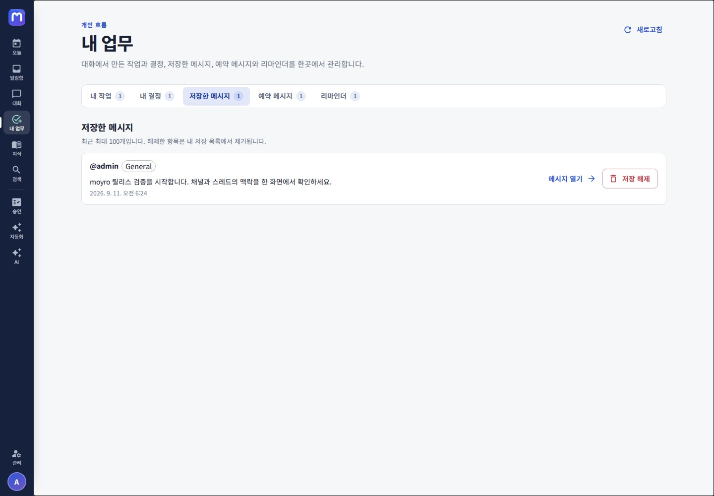
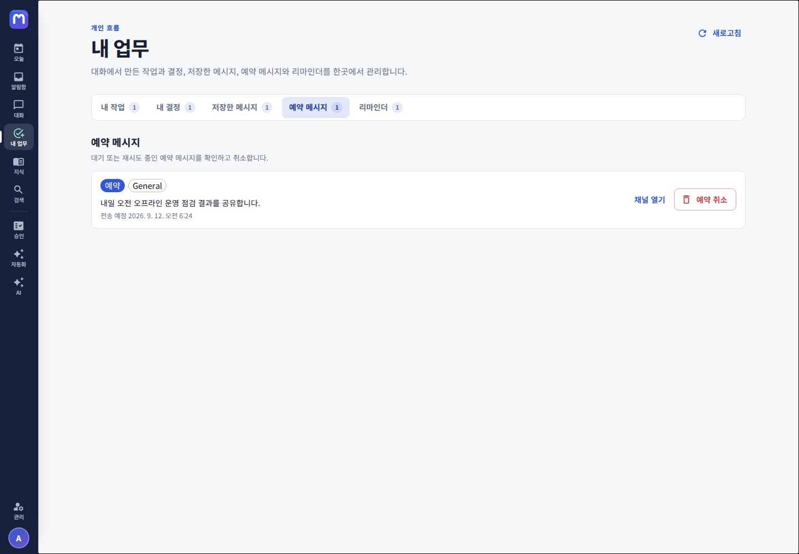
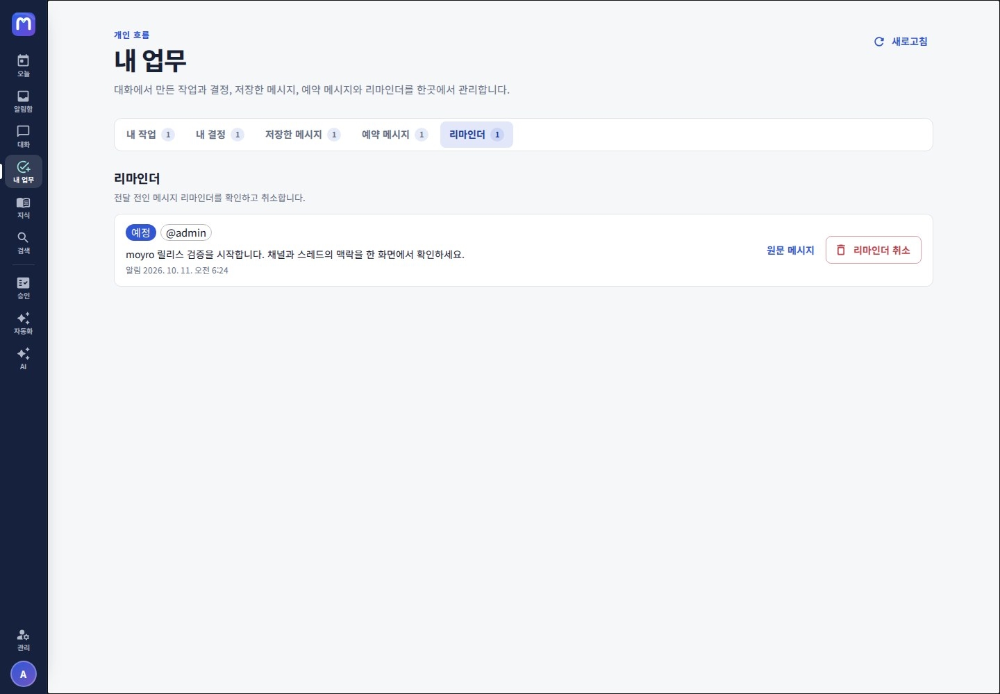
5. 지식검색, 대화 문서와 AI
지식검색에서 가입한 팀과 선택 채널을 정하면 현재 접근 가능한 메시지와 대화 문서만 PostgreSQL 전문검색으로 찾습니다. 각 원문은 [M#] 또는 [D#] 근거 카드를 가지며, AI를 사용할 수 있을 때 이 카드만 전달해 근거가 있는 답변을 생성합니다. AI가 없거나 실패해도 검색 결과는 유지됩니다.
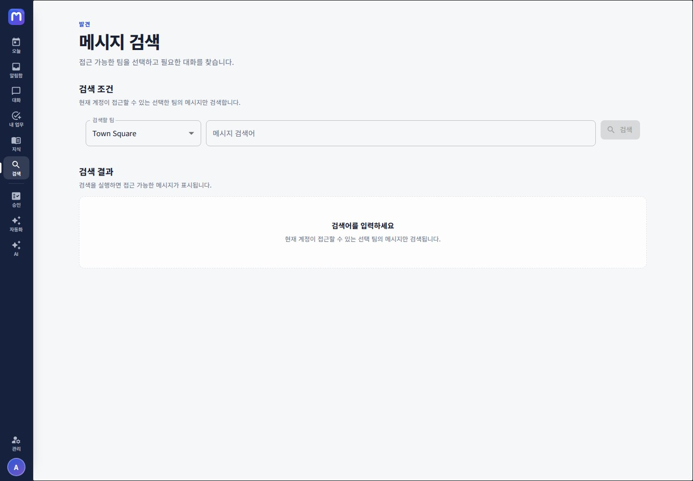
메시지 메뉴의 대화 문서 만들기는 전체 원본 스레드를 불러와 Markdown 초안을 만들고 source watermark와 함께 저장합니다. 이후 원문이 추가·수정·삭제되면 문서를 오래됨으로 표시하며 최신 원문으로 다시 생성할 수 있습니다. 제목·본문 수정은 revision 충돌을 감지하고 작성자만 저장·삭제할 수 있습니다. AI 대화 자체는 현재 브라우저 화면에만 있고 서버 이력으로 저장되지 않습니다.
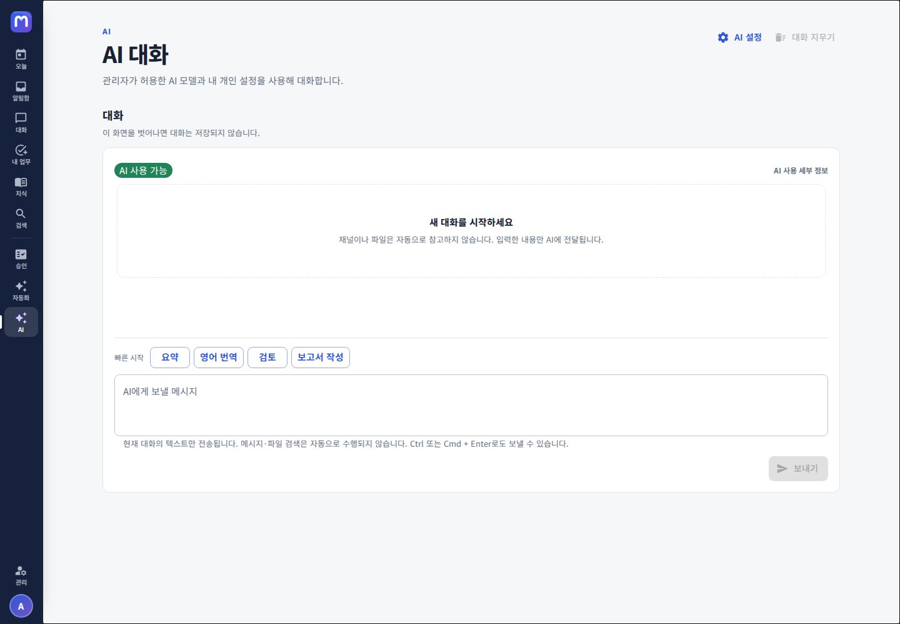
6. 승인 센터
승인 센터는 내 요청과 검토 대기를 분리합니다. 승인 정책이 비활성이어도 과거 이력을 확인할 수 있도록 진입점은 유지되며, 새 MCP 보호 작업은 활성 정책에 해당할 때만 요청을 만듭니다.
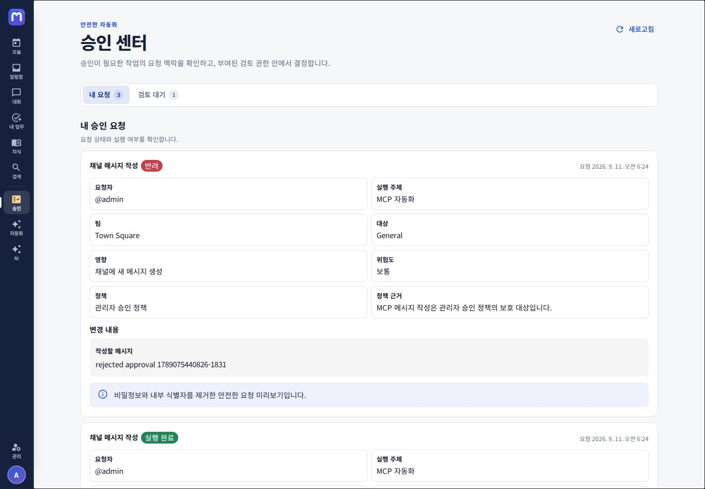
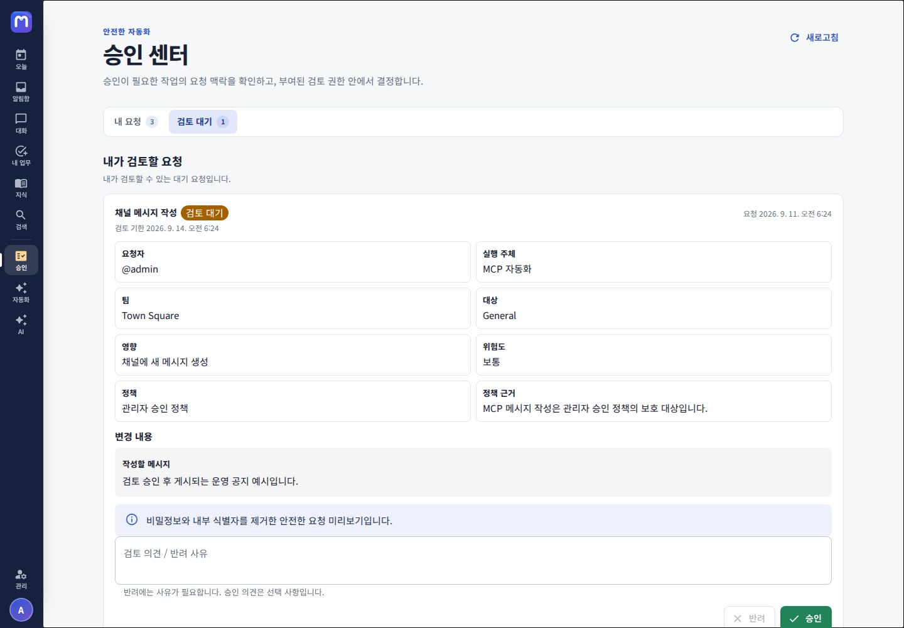
승인 카드는 서버가 만든 제목, 위험 수준, 요청 주체, 대상, 변경 내용과 정책 근거를 보여줍니다. 지원되는 메시지 내용은 서버에서 secret pattern을 마스킹하고 길이를 제한하며, 원시 실행 JSON과 내부 credential metadata는 일반 승인 화면에 표시하지 않습니다. 검토자별 상세 타임라인은 아직 제공하지 않습니다.
7. 개인 설정과 키
프로필 메뉴의 개인 설정에는 프로필, 화면, 알림, 세션, 개인 키와 AI 개인화가 있습니다. 알림에서 VIP, 우선 이벤트, 묶음 기준, 미루기 preset, 근무시간과 시간대를 관리합니다. 사이트 URL, Keycloak과 AI 공급자처럼 조직 전체에 영향을 주는 값은 관리자 영역에 있습니다.
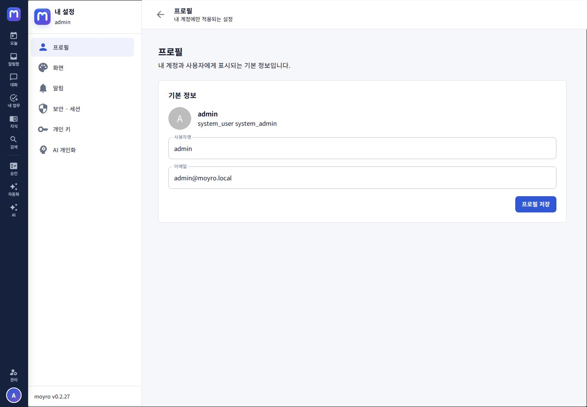
개인 키 화면에서 관리자가 허용한 scope와 수명 안에서 API·MCP 키를 발급합니다. Secret은 생성 또는 회전 응답에서 한 번만 표시되므로 안전한 credential 저장소로 바로 옮기세요.
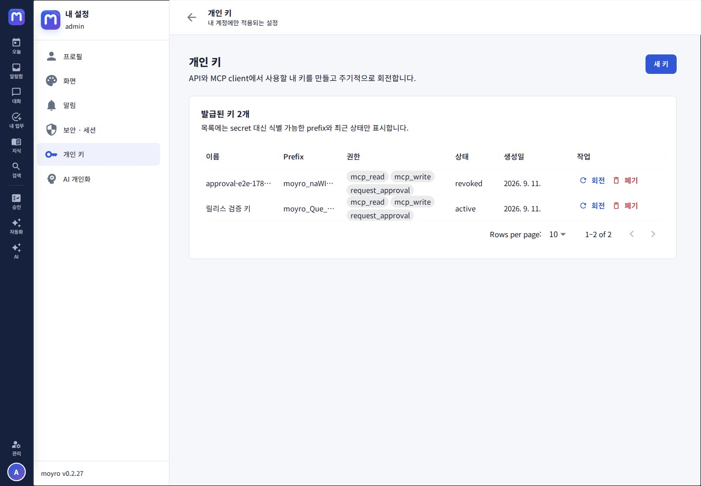
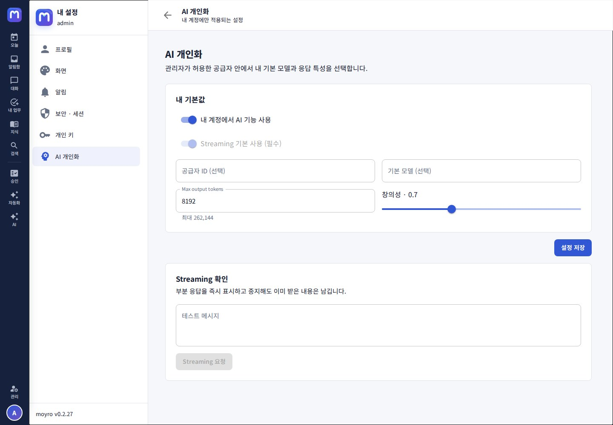
활성 web plugin은 별도 개인 설정 section을 등록할 수 있습니다. 예를 들어 검증된 EchoSummary bundle은 plugin-owned preference를 Moyro 개인 설정 안에 표시하고 저장합니다. 플러그인을 비활성화하거나 교체하면 이전 bundle의 setting contribution은 제거되며, 이 동작이 Mattermost의 전체 개인 설정 registry 호환을 뜻하지는 않습니다.
메시지 작성기와 편집기는 관리자가 정한 browser draft 정책을 따릅니다. 기본 local 모드는 이 기기에 사용자·채널·스레드별 초안을 최대 7일 보존하고 이 기기에 초안 저장됨을 표시합니다. 조직은 보존 기간을 1~30일로 바꾸거나 현재 session에만 저장하거나 저장을 완전히 끌 수 있으며, 로그아웃 시 현재 사용자 초안을 지우도록 설정할 수 있습니다.
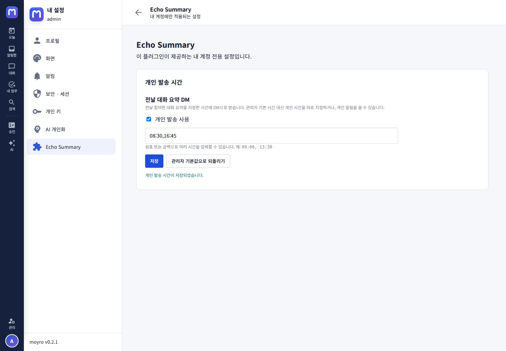
8. 모바일 Flow
430×932 화면에서는 오늘·대화·알림함·검색을 하단 탐색으로 열고, 내 업무·승인·AI·설정은 더보기에서 이동합니다. 각 화면은 데스크톱 패널을 단순 축소하지 않고 한 열로 배치하며 E2E에서 가로 overflow가 없는지 확인합니다.
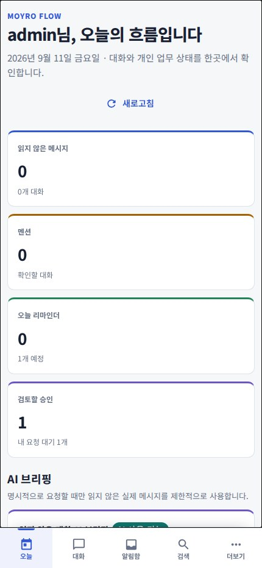
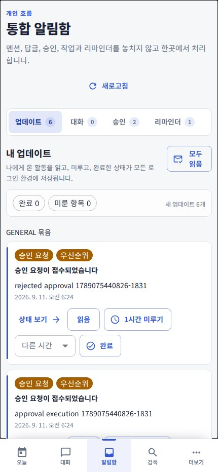
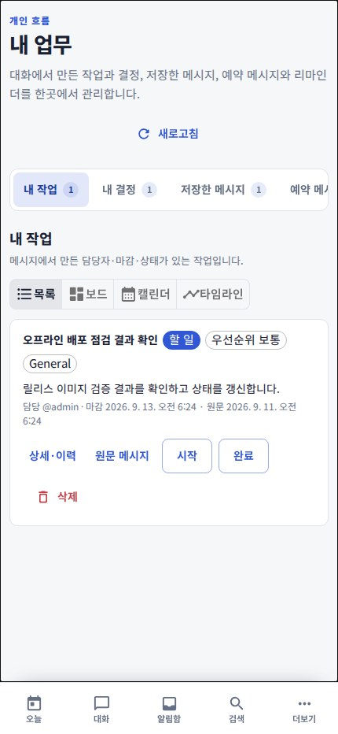
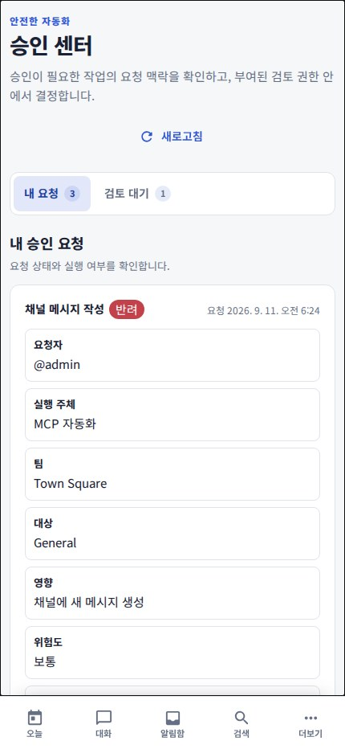
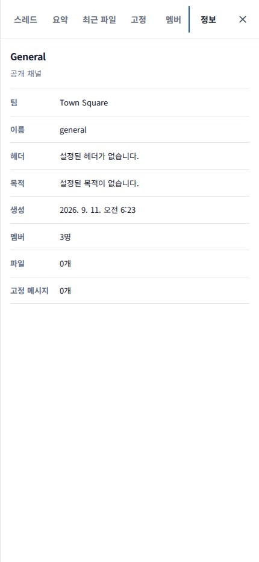
9. 문제가 생겼을 때
- 현재 URL을 새로고침해도 같은 메뉴가 열리는지 확인합니다.
- 연결 오류는 관리자에게 내부 네트워크와
/healthz확인을 요청합니다. - 채널이나 파일 접근 오류는 해당 채널 멤버십을 확인합니다.
- SSO 진입점이 없으면 관리자가 Keycloak을 활성화했는지 확인합니다.
- 문의 시 서비스 버전, 발생 시각, 현재 URL과 수행한 작업을 전달합니다.
자동화나 클라이언트를 연결할 때는 Mattermost 호환 /api/v4와 Moyro native /api/moyro/v1 OpenAPI 계약을 구분해 사용합니다.